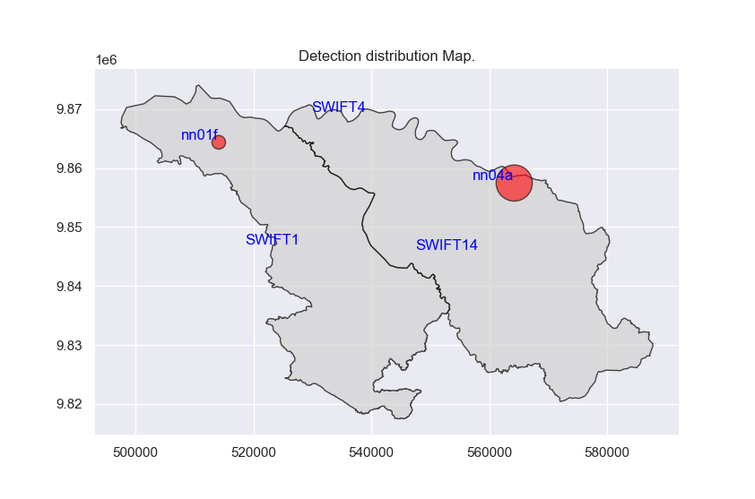
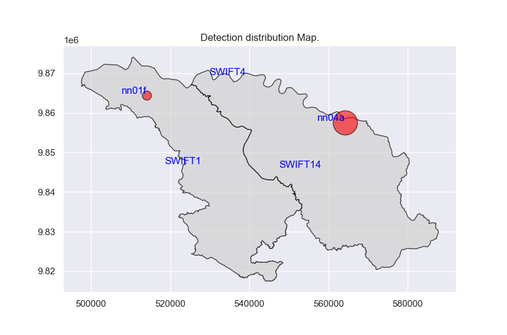

About Me
🌍 Passionate about understanding the natural world through the lens of ecological data science and bioacoustics, I am dedicated to advancing wildlife research and conservation using cutting-edge technology. My primary focus lies in studying the vocalization patterns of gorillas and chimpanzees, with the aim of uncovering insights into their behavior, communication, and population dynamics.
🔬 My work bridges biology and technology, leveraging machine learning and deep learning techniques to analyze soundscapes, identify species, and monitor biodiversity. From collecting field recordings in natural habitats to applying innovative data-driven approaches, I strive to make meaningful contributions to wildlife conservation and ecological research.
🔬 Achievements & Projects:
- Collected and analyzed gorilla vocalization data from their natural environments (parks, and protected areas).
- Currently developing a deep learning model for gorilla detection and vocalization pattern analysis, with a friendly user interface.
💡 Skills & Interests:
- Bioacoustics: Field data collection and analysis of primate vocalizations.
- Machine Learning: Developing and deploying models for sound pattern recognition.
- Ecological Data Science: Harnessing data to monitor wildlife populations and biodiversity.
- Technology in Conservation: Using AI to support sustainable solutions for wildlife and ecosystems.
🌱 Currently aspiring to pursue a PhD in ecological data science, I aim to focus on the co-existence of gorillas and chimpanzees, using bioacoustics to understand their interactions and promote their protection.
📢 Let’s Connect:
I am eager to connect with professionals, researchers, and organizations in wildlife conservation, AI for good, and ecological innovation. Together, we can drive impactful solutions for our planet.
Education
- M.Sc. in Artificial Intelligence - International University of Applied Science (Germany), 2024
- B.Sc. in Computer Science - Université Lumière de Bujumbura (Burundi), 2020
Awards
- IU ALUMNI AWARD 2024, ARTIFICIAL INTELLIGENCE - International University of Applied Science (Germany), 2024
- Payne Fellow - Cornell lab of Ornithology, K. Lisa Yang Center for Bioacoustics Conservation, 2024
Affiliation
Dian Fossey Gorilla Fund
International University of Applied Science (Germany)
K. Lisa Yang Center for Bioacoustics Conservation
Research
My research focuses on the development of advanced sound event detection algorithms to analyze and classify primate vocalizations, particularly those of gorillas and chimpanzees. By leveraging deep learning and AI-driven techniques, I aim to create a robust and efficient system capable of detecting and differentiating vocalization patterns in real-time.
Currently, I am developing a deep learning-based detector, inspired by YOLO, called YOHO (You Only Hear Once), which is designed specifically for sound event detection in ecological settings. This detector is trained on extensive datasets collected from various natural habitats, ensuring high accuracy in distinguishing between different primate calls.
The detector features a user-friendly graphical interface that allows researchers and conservationists to upload and analyze audio recordings efficiently. Below are some images of the detector’s GUI in action:

 
